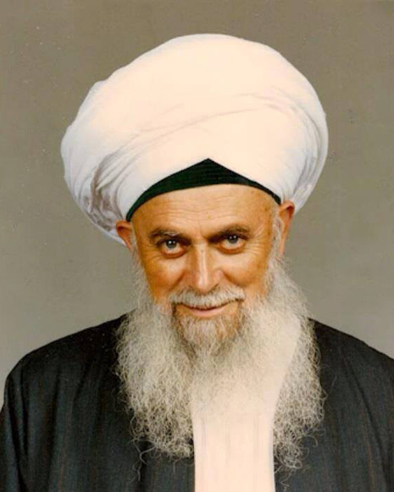
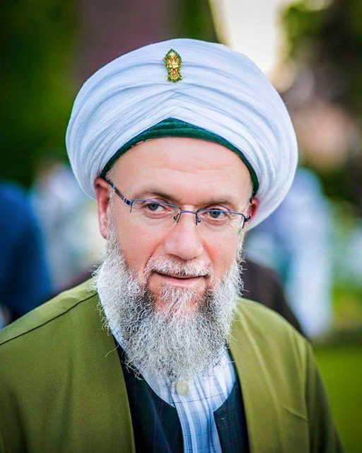

Die spirituelle Basis unserer Arbeit liegt in der Sufi-Tradition des Naqshibandiyya Ordens,
dessen geistiges Oberhaupt über mehr als 40 Jahre Shaykh Muḥammad Nāẓim al-Ḥaqqānī auf Zypern war.
Shaykh Nāẓim ist immerfort auf verschiedenste Menschen zugegangen, er hat viele Reisen unternommen
und viele Menschen besucht. Weltweit hat er unzählige Anhänger/Schüler unterschiedlichster
Religionen und Nationalitäten.

Am 7. Mai 2014 hat Shaykh Nāẓim im Alter von 92 Jahren diese Welt verlassen und ist in die jenseitige hinübergewechselt. Als seinen Nachfolger als Oberhaupt des Naqshbandi-Ordens hat er seinen ältesten Sohn Shaykh Muḥammad Ᾱdil ar-Rabbani eingesetzt. Shaykh Nāẓims jüngeren Sohn Shaykh Bahauddin und dessen Sohn Mehmet Nāẓim Efendi unterstützen Shaykh Muḥammad bei seiner Aufgabe.
In der Tradition des Naqshibandiyya Ordens ist der Shaykh (Meister) durch eine ununterbrochene Übertragungskette, die zurückführt bis zum Propheten Muḥammad (Allāhs Segen und Friede seien auf ihm), mit dem göttlichen Geheimnis verbunden. Ein Hauptmerkmal dieser Tradition ist das “Sohbet” oder die spirituelle Unterweisung, in der göttliche Wahrheiten und überlieferte Weisheiten durch einen autorisierten Shaykh oder im Namen dieses Shaykhs in einen zeitgemäßen Zusammenhang gestellt und allgemein verständlich vermittelt werden.
Das zweite Hauptmerkmal dieses Weges ist die tägliche regelmäßige Meditation (Dhikr, d.h. Gedenken oder Erinnerung an Gott).
Einmal in der Woche trifft man sich zum gemeinsamen Dhikr. Gott hat in jeden Menschen einen göttlichen Funken gelegt, der im
tiefsten Herzen verborgen ist.
Durch den Dhikr erhält der Suchende nicht zuletzt
die Möglichkeit, das Göttliche in sich zu finden bzw. wiederzuentdecken.
Beim Dhikr weden u.a. die
schönen Namen Gottes, Koran-Verse und andere heilige Formeln wiederholt und rezitiert.